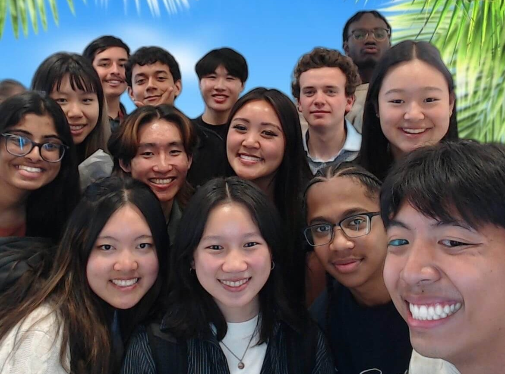

May 2023 — August 2023
Santa Clara, California
Oracle Corporation:
Software Engineer Intern
Software Engineer Intern
Over the summer of 2023, I worked as a Software Engineer Intern for
the Oracle Hardware Development team, under Oracle's Corporate
Architecture business unit. In this position, I developed Python
scripts that used in-house tools to run static code analysis on the
department's codebase. The scripts achieved full codebase coverage
across two different product platforms, and I also designed utility
scripts to parse and analyze the static code analysis output
reports. I integrated all of these automation scripts into the
department's nightly build process, streamlining the workflow for
over 150 engineers.
